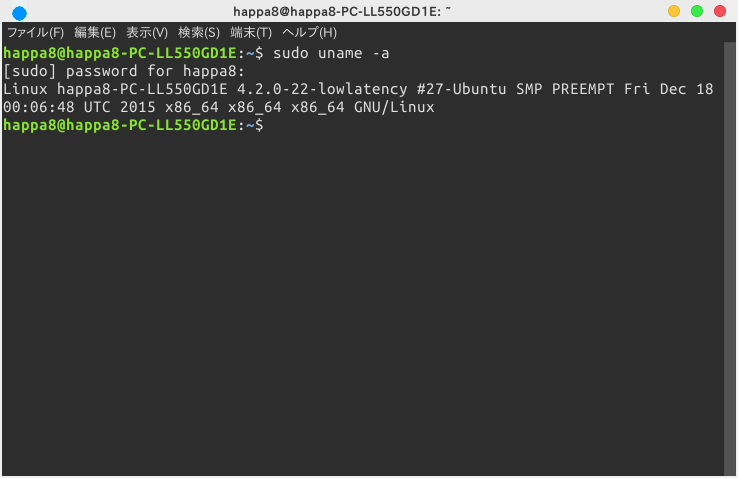

low-latencyカーネルについて
low-latencyカーネルって一体なんぞ？
さて、このサイトでは珍しく、なんだ難しい言葉が出てきましたね。しかし、怖がる必要は全くありません。
この、low-latencyカーネルとは、一言で言っちゃうと、Ubuntuの動作が軽くなっちゃうものです。
使い方も簡単！インストールするだけ！そんなけで簡単に軽くなっちゃいます。やったね！
それでは、すこし詳しい説明をしていきましょう。
この、low-latencyカーネルとは、よりリアルタイムに近いカーネルです。ちょっと待て、リアルタイムなカーネル、とは一体何なのか。
リアルタイムカーネル、とは、アプリケーションの起動に終了期限（デッドライン）、いわば、締め切りを持たせ、アプリケーションの遅延を減らす仕組みのカーネルです。
…難しいですね。
結論：low-latencyカーネルと入れると音質向上、体感速度向上、プログラムの動作の高速化、等の効果が期待できる！！
low-latencyカーネルをインストールする
さてそんな便利なカーネルを早速インストールしていきましょう。インストールのコマンドは、
$ sudo apt-get install linux-lowlatency
インストールできたか確認するコマンドは
$ sudo uname -a
成功するとこんな感じになります。 
それでは良きLinuxライフを！